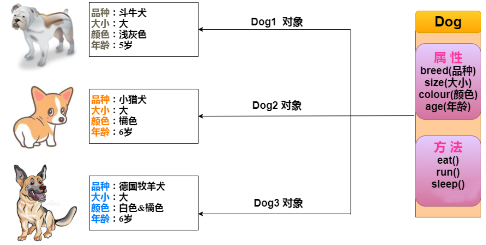

3 要学Java理解对象和类是关键¶

序言¶
我们都知道Java是纯面向对象编程语言，这个对象是什么，类是什么，它们的关系是怎样呢？
状态和行为¶
对象有两个特征，一个是状态（又叫做属性），一个是行为（又叫做方法），我们拿狗来举例，狗的状态有品种、大小、颜色、年龄；行为有吃、跑、睡觉。如图所示：

图的左边是3个狗对象，右边是1个狗类。类定义了对象应该有哪些属性和方法，对象根据类定义好的模板，创建了个性化的实例。
代码实现如下：
public class Dog {
// 属性
String breed;
int size;
String colour;
int age;
// 方法
void eat() {
}
void run() {
}
void sleep(){
}
}
构造方法¶
在通过类创建对象时，构造方法提供了如何创建对象的细节。Java会给类一个默认的构造方法，你也可以自定义一个或多个构造方法，构造方法命名必须和类名相同，比如：
public class Dog{
public Dog(String breed){
}
}
代码中定义了2个构造方法，根据参数不同，在构造时会调用相应的构造方法。
创建对象¶
如果没有对象，那么就new一个。Java是通过new关键字来创建对象的。比如使用默认构造方法创建对象：
Dog myDog = new Dog();
或者使用自定义构造方法创建对象：
Dog myDog = new Dog("Bulldog");
访问对象属性和方法¶
Java和大多数语言一样，采用.运算符访问对象属性和方法，比如：
public class Dog {
int age;
public void setAge(int age) {
this.age = age;
}
public int getAge() {
return this.age;
}
public static void main(String[] args) {
// 创建对象
Dog myDog = new Dog();
// 通过方法来设定age
myDog.setAge(2);
// 调用另一个方法获取age
System.out.println(myDog.getAge());
// 也可以像下面这样访问成员变量
System.out.println(myDog.age);
}
}
类存放规则¶
Java源文件是用类来组织的，存放在源文件中的类遵循下面几项规则：
一个源文件只能有一个public类，可以有多个非public类。
源文件名必须与public类名一致。
package语句在首行，其次是import语句，最后是类。
小结¶
本文介绍了对象与类的关系，即：类是对象的模板，根据类创建个性化的对象实例。对象有状态和行为，也叫做属性和方法。类创建对象时会使用构造方法，可以通过.运算符来访问对象属性和方法。文章最后列举了类存放的几条规则，这是Java语法的约束。